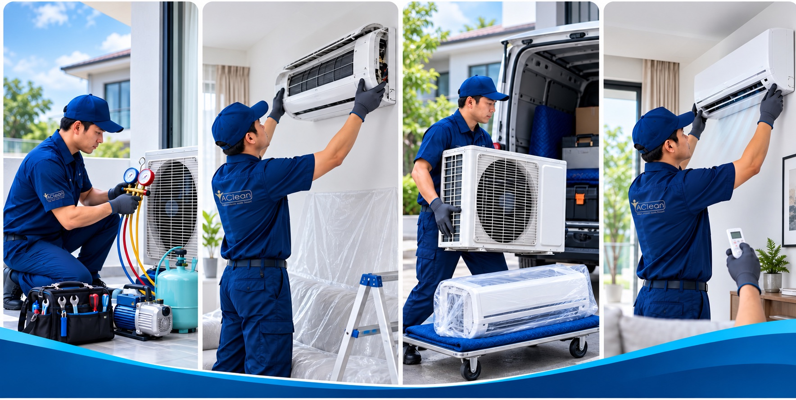
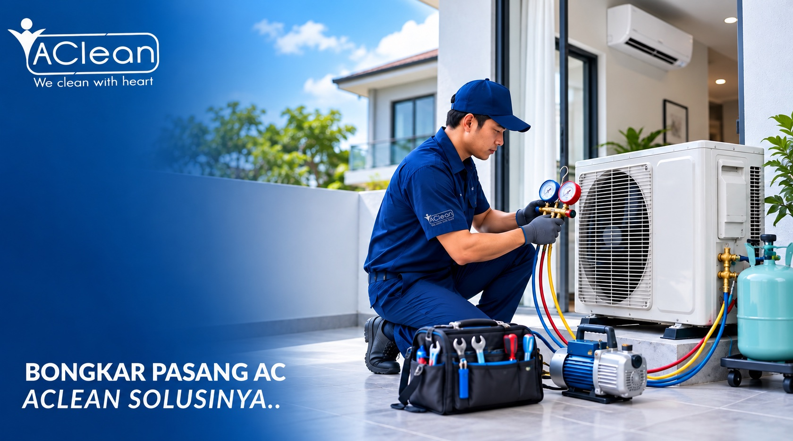

01
Konsultasi & Survei
Diskusikan lokasi lama dan baru, panjang pipa, akses unit, serta rencana pemasangan. Estimasi biaya diberikan sebelum pengerjaan.
Pindahan rumah, renovasi, atau ganti posisi AC? AClean spesialis bongkar pasang AC pindahan. Freon disimpan dan tidak terbuang, unit AC dipindah dengan aman tanpa risiko kerusakan.

Pilih paket sesuai kebutuhan — semua harga sudah termasuk penyimpanan freon
AC dibongkar dengan aman, freon disimpan, unit siap untuk dibawa atau disimpan.
AC dibongkar dan dipasang kembali di lokasi yang sama atau berbeda. Termasuk pipa dan kabel standar.
Khusus untuk renovasi — AC dibongkar, disimpan selama renovasi, kemudian dipasang kembali.
Perkiraan biaya lengkap termasuk pipa, kabel, breket & jasa vacum
Dikerjakan hati-hati agar unit AC tetap dalam kondisi prima
← Geser untuk melihat setiap tahap →

Diskusikan lokasi lama dan baru, panjang pipa, akses unit, serta rencana pemasangan. Estimasi biaya diberikan sebelum pengerjaan.
Freon diamankan sesuai kondisi unit, lalu indoor dan outdoor dilepas dengan alat yang tepat tanpa merusak dinding.
Unit dan komponen dilindungi saat dibawa agar sirip kondensor, pipa, panel, dan sambungan tetap aman.
Unit dipasang rapi di lokasi baru, jalur diperiksa dan divakum bila diperlukan, lalu suhu serta tekanan diuji sebelum serah terima.
Membongkar AC tanpa alat freon recovery akan membuang freon ke udara — merusak lapisan ozon dan AC tidak dingin setelah dipasang kembali
Posisi AC yang baik adalah di dinding yang sirkulasi udaranya lancar, tidak terkena sinar matahari langsung, dan mudah diakses untuk service
Pipa yang terlalu panjang (lebih dari 10 meter) akan mengurangi performa pendinginan. Konsultasikan dengan teknisi kami untuk solusi terbaik
Sebelum dipindah, kami periksa kondisi AC Anda. Jika ada kerusakan, sebaiknya diperbaiki bersamaan dengan proses relokasi
Pindah rumah bawa 3 AC. Teknisi AClean kuras freon dengan benar pakai alat khusus. Setelah dipasang di rumah baru, AC dingin sempurna. Tidak perlu isi freon lagi!
Renovasi rumah, perlu bongkar 2 AC. AClean datang, bongkar rapi, cat dinding tidak rusak sama sekali. Setelah renovasi selesai dipasang kembali, langsung dingin.
Minta pindah posisi AC dari kamar depan ke belakang. Kerja teknisi sangat rapi, pipa baru rapi, dan hasilnya AC lebih dingin karena posisi lebih optimal.
Kami melayani bongkar pasang AC di seluruh Tangerang Selatan dan sekitarnya
Bongkar pasang AC pindahan BSD
Bongkar pasang AC renovasi Alam Sutera
Relokasi AC area Bintaro
Bongkar pasang AC Gading Serpong
Relokasi AC kawasan Karawaci
Bongkar pasang AC Pamulang
Relokasi AC klaster premium
Bongkar pasang AC Jakarta Selatan
Bongkar pasang AC Summarecon
Jawaban untuk pertanyaan yang paling sering ditanyakan
Dokumentasi proyek bongkar pasang AC dari pelanggan kami di Tangerang Selatan.
Chat kami sekarang — survei dan estimasi harga gratis.
💬 Chat WhatsApp SekarangAtau hubungi: 0812-8989-8937